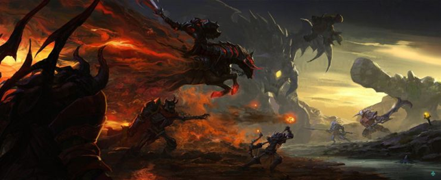

Лор
Еще до того, как Мир был создан, шла бесконечная битва между двумя Древними Сущностями (Ancients), что сильно настроило против них миллионы Предтеч (Primordials), и те заперли враждующих в тюрьму, названную «Безумная Луна» (The Mad Moon). Так как мир Dota 2 захватил тюрьму в свои гравитационные поля, казалось, что всё хорошо. Но погребённые в глубине темницы Сущности вырабатывали планы по освобождению себя. Перебрав в уме всё, что можно придумать за долгое время, они смогли выбраться из заточения и свалились на планету вместе с осколками своей тюрьмы. Но не всё так просто: некоторые из тех, кто был на поле боя, приложили к этому руку; к этому отсылает комикс «Байки из Потайной лавки» (Tales from the secret shop). Почитать его можно по ссылке. Упавшие осколки повлияли на цивилизации, которые селились рядом с ними. Они дали этим цивилизациям энергию движения, ману, защиту, даже воскрешение. Но освобождённые Сущности не могли позволить себе забыть своё прошлое и вскоре снова развязали войну. В этот раз они вовлекали в неё не только цивилизации, но и призывали героев, чтобы биться по каждому незначительному поводу.